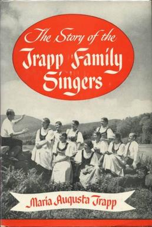

The Von Trapp Family
The Sound of Music, although based on the true story of the von Trapp family and Maria von Trapp, strays from the original historical events in many of its details.
The von Trapp family originated with Georg von Trapp, an Austro-Hungarian naval officer, and his first wife, Agatha. After Agatha's death, Georg married Maria Kutschera, a novice from Nonnberg Abbey. The family, initially bonding through music, began performing publicly after winning a Salzburg music competition in 1936. With the Nazi annexation of Austria in 1938, they fled to the United States, where they continued their musical career as the Trapp Family Singers and settled in Vermont. Their story inspired the 1956 German film and the Broadway musical, culminating in the famous 1965 movie. Today, the Trapp Family Lodge in Vermont, operated by their descendants, remains a testament to their enduring legacy.
Their full story can be found in the book The Story of the Trapp Family Singers, written by none other than Maria von Trapp herself.
The making of "The Sound of Music" is a remarkable journey that began with this very book, inspiring a 1956 German film that later caught the attention of Broadway producers. Richard Rodgers and Oscar Hammerstein II adapted the story into a stage musical, premiering in 1959 and becoming a huge success.